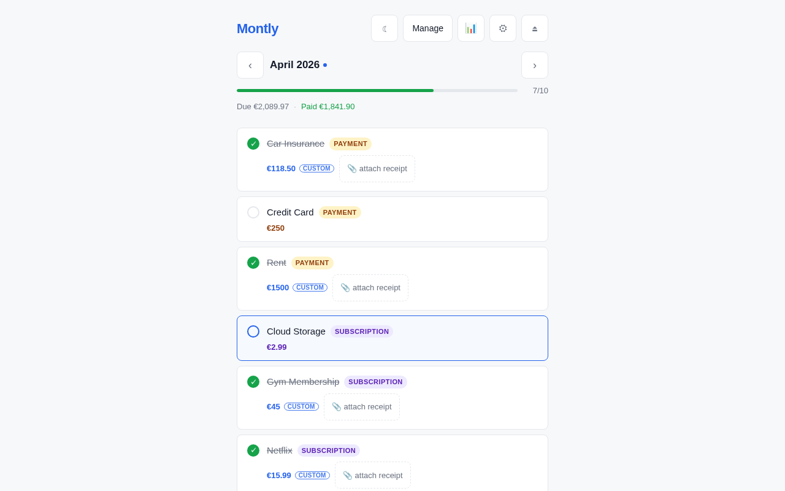
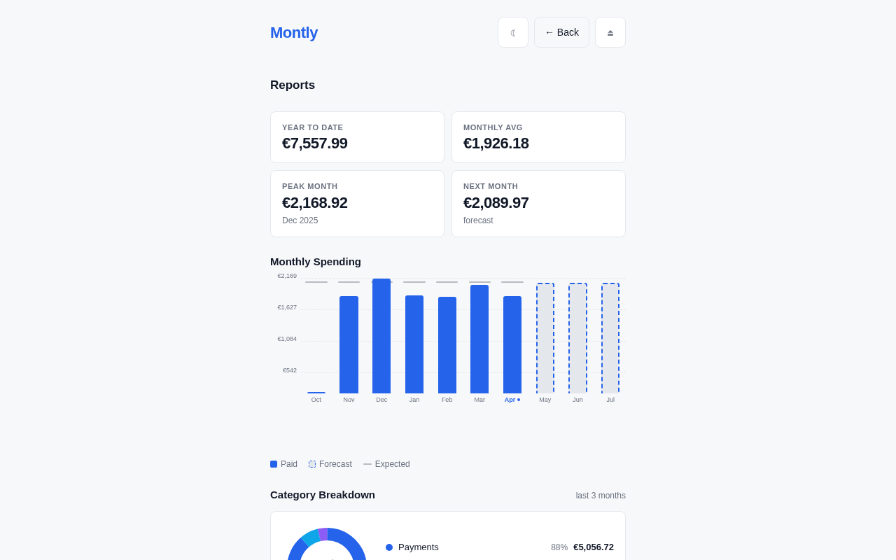
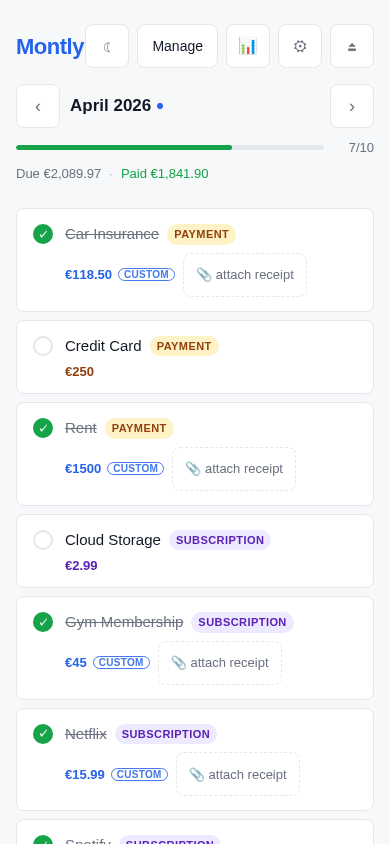

Montly is a self-hosted monthly recurring task tracker. Track bills, subscriptions, payments, and reminders — with receipt uploads, spending reports, multi-user support, and a clean mobile-friendly UI.
Free and open source — MIT license — no account required

Monthly, bi-monthly, quarterly, semi-annual, or annual intervals. Tasks recur automatically — no re-entry needed.
Mark tasks done, skip a month, or log the actual amount paid. Three states: pending, completed, skipped.
Attach PDFs or images to each completion. Stored securely, served only to the owning user.
Monthly bar chart with 6-month history and 3-month forecast, category donut, YTD totals, and peak-month stats.
Isolated data per user. Admin can create and delete accounts. Each user has their own settings and tasks.
Headless access via Bearer mt_… tokens. Outbound webhooks on task completion, uncompletion, and skip.
Single Docker image with embedded frontend. SQLite by default — no external services required.
Append-only log of who completed, edited, deleted, or skipped tasks and who managed users or tokens.
Export all completions to CSV for use in spreadsheets, or import from the same format to migrate or bulk-load historical data.


Requires Docker with Compose v2 (docker compose).
git clone https://github.com/lucaslra/Montly.git
cd Montly
docker compose up -dOpen http://localhost:8080 — on first access you'll be prompted to create the admin account.
docker pull ghcr.io/lucaslra/montly:latest